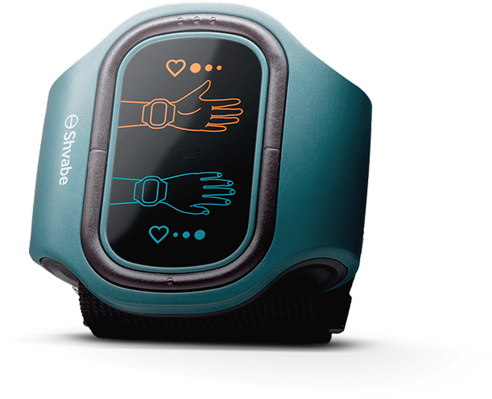
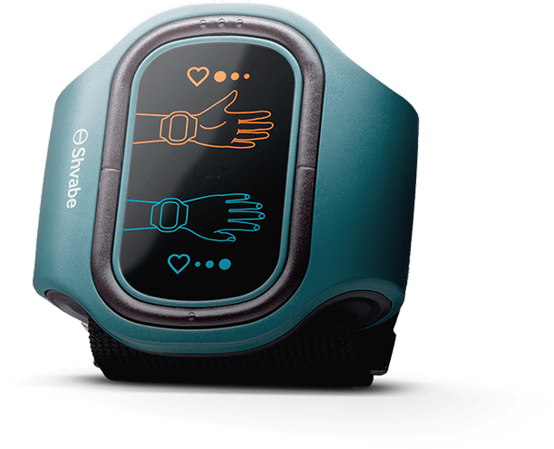

ABP051
Коректор за ниско кръвно налягане АВР-051
Спасението от хипертонията е лесно!
-

Регулира
кръвното налягане -
Подобрява
здравословното състояние и съня -
Подобрява
работоспособността -
Нормализира
работата на сърдечно-съдовата система -
Стабилизира
емоционалното състояние
 

Устройството е регистрирано като медицинско изделие
Препоръчва се за употреба от водещите кардиолози на ЕС
Резултатът от употребата се постига до 5-ия ден от лечението
Ефективността е доказана клинично